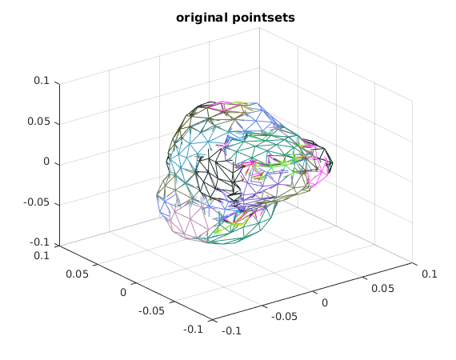
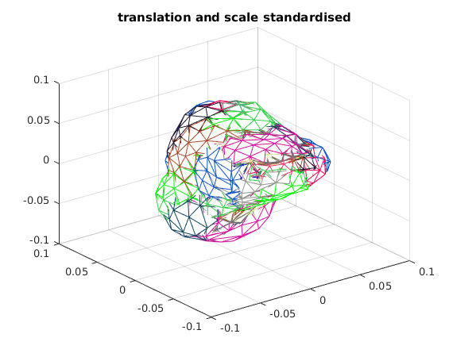
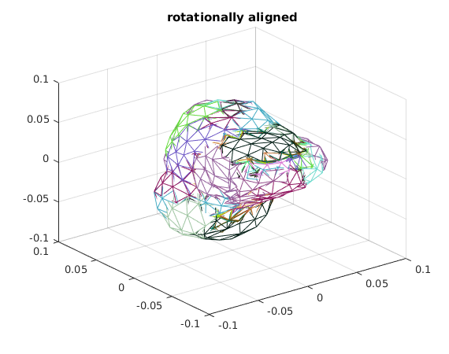
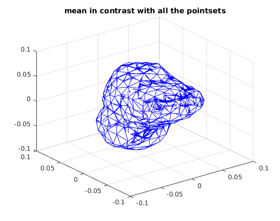
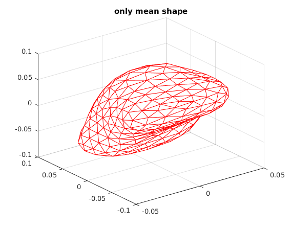
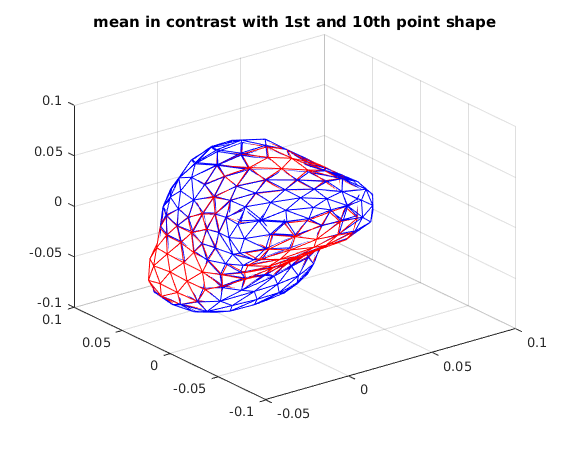
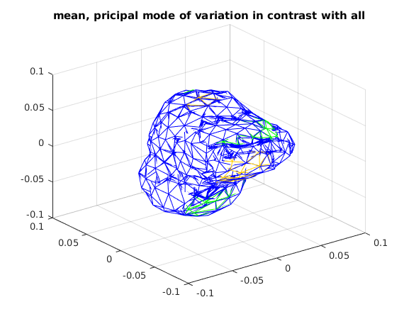
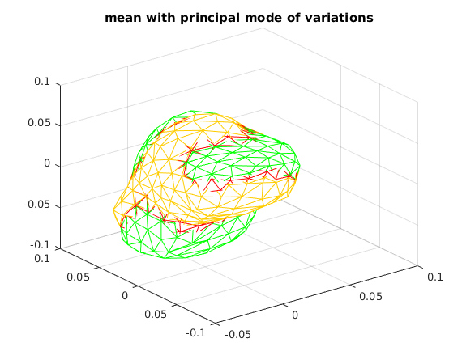
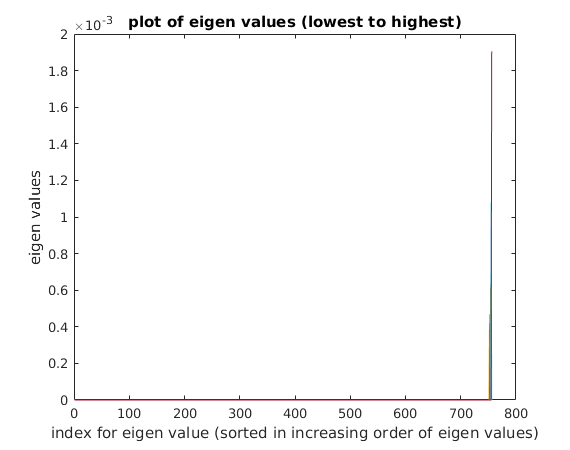

Shape analysis for 3D pointsets
The results of this script will be saved in ../../results/ecllipse/ The mode of variation is only displayed along the first principal mode of variation
Contents
Loading the data
A = load('../../data/bone3D.mat');
pointSets = A.shapesTotal;
tidx = A.TriangleIndex;
numOfPointSets = size(pointSets, 3);
numOfPointsPerSet = size(pointSets, 2);
norm_pointSets = align_transcale(pointSets);
rotalign_pointSets = align_rot(norm_pointSets);
Original pointsets (scatter plot with each pointset given a randomly picked color)
figure;
ttl = 'original pointsets';
pSets_plotter(pointSets, ttl, tidx);
 Pointsets after re-centering to the origin and scaling to unit norm
figure;
ttl = 'translation and scale standardised';
pSets_plotter(norm_pointSets, ttl, tidx);
 Pointsets after rotational allignment
figure;
ttl = 'rotationally aligned';
pSets_plotter(rotalign_pointSets, ttl, tidx);
 Calculated mean shape
The trimesh (which uses patch internally) is such that only the outer most layer is visible at a particular point in space (which is logical) but because of this If mean is in between the layers then it is not visible hence even though mean is plotted in red, the graph only show mostly blue lines here and there which shadows the mean, mean is visualised separately as well
mnShape = meanShape(rotalign_pointSets); figure; for i = 1:numOfPointSets pSet = rotalign_pointSets(:,:,i); trimesh(tidx, pSet(1,:), pSet(2,:), pSet(3,:), 'edgecolor', [0,0,255]/255); hold on; end trimesh(tidx, mnShape(1,:), mnShape(2,:), mnShape(3,:), 'edgecolor', [255,0,0]/255); ttl = 'mean in contrast with all the pointsets'; title(ttl); saveas(gcf, strcat('../../results/3dbone/', ttl, '.jpg')); figure; trimesh(tidx, mnShape(1,:), mnShape(2,:), mnShape(3,:), 'edgecolor', [255,0,0]/255); ttl = 'only mean shape'; title(ttl); saveas(gcf, strcat('../../results/3dbone/', ttl, '.jpg')); figure; pSet = rotalign_pointSets(:,:,1); trimesh(tidx, pSet(1,:), pSet(2,:), pSet(3,:), 'edgecolor', [0,0,255]/255); hold on; pSet = rotalign_pointSets(:,:,10); trimesh(tidx, pSet(1,:), pSet(2,:), pSet(3,:), 'edgecolor', [0,0,255]/255); hold on; trimesh(tidx, mnShape(1,:), mnShape(2,:), mnShape(3,:), 'edgecolor', [255,0,0]/255); ttl = 'mean in contrast with 1st and 10th point shape'; title(ttl); saveas(gcf, strcat('../../results/3dbone/', ttl, '.jpg'));  
Calculated principle mode of variations
The above reasoning is true here as well, we've also shown mean with principal mode of variation as well (mean in read)
A = rotalign_pointSets - repmat(mnShape, [1, 1, numOfPointSets]); B = zeros(numOfPointsPerSet*3, numOfPointSets); for i=1:numOfPointSets t = A(:,:,i); B(:,i) = t(:); end covmat_A = cov(B'); [eig_vec, eig_vals] = eig(covmat_A); principal_vec = eig_vec(:,756);% principal_vec = reshape(principal_vec, [3,252]); mode_variation1 = mnShape+2*sqrt(eig_vals(756,756))*principal_vec; mode_variation2 = mnShape-2*sqrt(eig_vals(756,756))*principal_vec; figure; for i = 1:numOfPointSets pSet = rotalign_pointSets(:,:,i); trimesh(tidx, pSet(1,:), pSet(2,:), pSet(3,:), 'edgecolor', [0,0,255]/255); hold on; end trimesh(tidx, mnShape(1,:), mnShape(2,:), mnShape(3,:), 'edgecolor', [255,0,0]/255); hold on; trimesh(tidx, mode_variation1(1,:), mode_variation1(2,:), mode_variation1(3,:), 'edgecolor', [255, 204, 0]/255); hold on; trimesh(tidx, mode_variation2(1,:), mode_variation2(2,:), mode_variation2(3,:), 'edgecolor', [0, 255, 0]/255); ttl = 'mean, pricipal mode of variation in contrast with all'; title(ttl); saveas(gcf, strcat('../../results/3dbone/', ttl, '.jpg')); figure; trimesh(tidx, mnShape(1,:), mnShape(2,:), mnShape(3,:), 'edgecolor', [255,0,0]/255); hold on; trimesh(tidx, mode_variation1(1,:), mode_variation1(2,:), mode_variation1(3,:), 'edgecolor', [255, 204, 0]/255); hold on; trimesh(tidx, mode_variation2(1,:), mode_variation2(2,:), mode_variation2(3,:), 'edgecolor', [0, 255, 0]/255); ttl = 'mean with principal mode of variations'; title(ttl); saveas(gcf, strcat('../../results/3dbone/', ttl, '.jpg')); 
Decaying eigen values plot
figure; e_vals = eig_vals; plot(e_vals); xlabel('index for eigen value (sorted in increasing order of eigen values)'); ylabel('eigen values'); ttl = 'plot of eigen values (lowest to highest)'; title(ttl); saveas(gcf, strcat('../../results/3dbone/', ttl, '.jpg'));